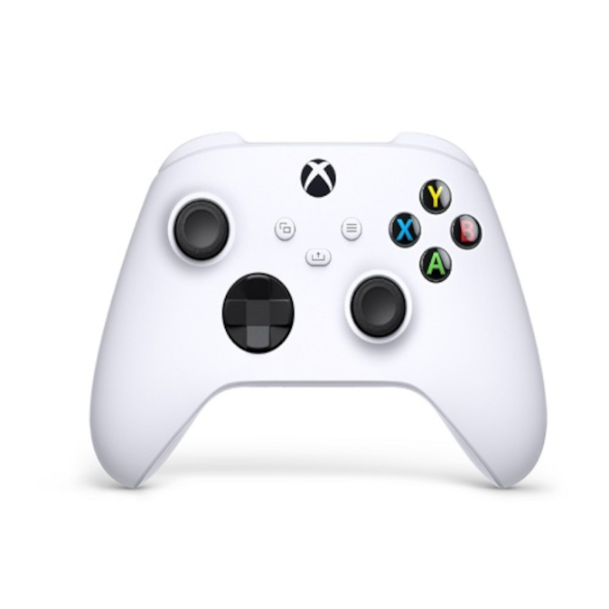

Videojuego
Videojuego, juego de vídeo es un juego electrónico en el que una o más personas interactúan por medio de un controlador, con un dispositivo que muestra imágenes de video. Este dispositivo electrónico, conocido genéricamente como plataforma, puede ser una computadora, una máquina de arcade, una videoconsola o un dispositivo portátil, como por ejemplo un teléfono móvil, teléfono inteligente o tableta.
La industria de los videojuegos es una de las principales en el mundo del arte y del entretenimiento.
Al dispositivo de entrada, usado para manipular un videojuego se le conoce como controlador o mando, y varía dependiendo de la plataforma. Por ejemplo, un controlador podría únicamente consistir de un botón y una palanca de mando o joystick, mientras otro podría presentar una docena de botones y una o más palancas, lo que llamamos mando. Los primeros juegos informáticos solían hacer uso de un teclado para llevar a cabo la interacción, o bien requerían que el usuario adquiriera un mando con un botón como mínimo. Muchos juegos de computadora modernos permiten o exigen que el usuario utilice un teclado y un ratón de forma simultánea.
Ubicación
Estamos ubicados en el corazon de la ciudad
Géneros de videojuegos
- Acción
- Disparos
- Estrategia
- Simulación
- Deporte
- Carreras
- Aventuras
- Rol
- Otros